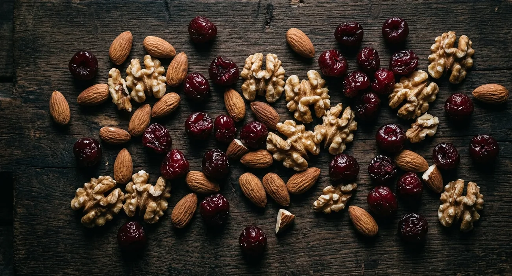
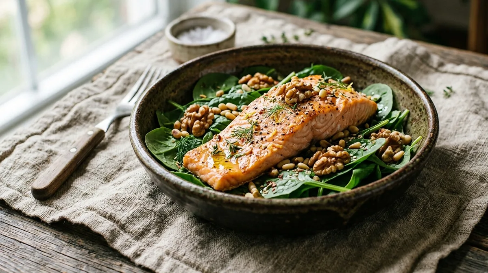

What Are the Best Foods for Recovery and Better Sleep After a Long Day?
The best foods for recovery and sleep after a long day are those rich in tryptophan, magnesium, and complex carbohydrates — turkey, eggs, nuts, leafy greens, oats, and tart cherries. Equally important: avoid heavy meals, alcohol, and high-sugar foods within 2–3 hours of bedtime.

As an Amazon Associate I earn from qualifying purchases.
You already know sleep matters. But what you eat in the hours before bed — and throughout the day — has a direct, measurable impact on how deeply you sleep, how quickly you recover, and how you feel the next morning.
If you're looking for the best foods for recovery and sleep quality adults over 30 should prioritize, this guide gives you a practical, research-backed breakdown — without the complicated meal plans or expensive superfoods.
Quick Answer
The best foods for recovery and sleep after a long day are those rich in tryptophan, magnesium, and complex carbohydrates — turkey, eggs, nuts, leafy greens, oats, and tart cherries. Equally important: avoid heavy meals, alcohol, and high-sugar foods within 2–3 hours of bedtime.
Why Food Affects Sleep More Than Most People Realize
Sleep quality isn't just about what happens in your bedroom — it starts hours earlier with what you eat and drink. Here's why:
- Blood sugar spikes from late-night carbs disrupt deep sleep cycles
- Alcohol fragments REM sleep even when it helps you fall asleep faster
- Magnesium deficiency reduces slow-wave sleep depth
- Tryptophan — an amino acid in certain foods — is the precursor to serotonin and melatonin, your primary sleep hormones
Eating strategically doesn't mean obsessing over every meal. It means understanding a few key principles and making small adjustments that compound over time.
The Best Foods for Recovery and Sleep Quality for Adults Over 30
1. Turkey and Chicken — Tryptophan for Sleep Hormones
Tryptophan is the amino acid your body converts into serotonin and then melatonin — the hormones that regulate your sleep-wake cycle. Turkey and chicken are among the richest dietary sources.
The catch: tryptophan works best when consumed with a small amount of complex carbohydrates, which help transport it across the blood-brain barrier. A small turkey and whole grain wrap or chicken with sweet potato 2–3 hours before bed is more sleep-supportive than turkey alone.
2. Eggs — Complete Recovery Protein
Eggs contain all essential amino acids needed for muscle repair and tissue recovery — plus vitamin D, B12, and choline, which supports brain recovery overnight. Two eggs in the evening provide a complete protein source without the digestive burden of a heavy meal.
3. Leafy Greens — Magnesium and Calcium
Spinach, kale, and Swiss chard are excellent sources of magnesium and calcium — two minerals that play critical roles in sleep regulation. Magnesium activates the parasympathetic nervous system (rest mode) and regulates GABA, the brain's primary calming neurotransmitter. Calcium helps the brain convert tryptophan into melatonin.
A simple evening salad or sautéed greens with dinner covers both bases without adding calories or complexity.
4. Tart Cherries — Natural Melatonin Source
Tart cherries are one of the few foods with meaningful natural melatonin content. Research shows tart cherry juice increases sleep duration and quality in adults with insomnia. A small glass (8oz) of tart cherry juice in the evening is one of the most evidence-backed food interventions for sleep.
5. Oats — Complex Carbs for Tryptophan Transport
Oats provide slow-digesting complex carbohydrates that support tryptophan transport to the brain without causing blood sugar spikes. They also contain melatonin and small amounts of magnesium. A small bowl of oatmeal 1–2 hours before bed is one of the most sleep-supportive evening snacks available.
6. Nuts and Seeds — Magnesium and Healthy Fats
Almonds and walnuts are particularly valuable for sleep recovery. Almonds are high in magnesium; walnuts contain their own source of melatonin and omega-3 fatty acids that reduce inflammation and support brain recovery during sleep. A small handful (1oz) is the right amount — enough to provide the nutrients without disrupting digestion.
7. Fatty Fish — Omega-3s and Vitamin D
Salmon, mackerel, and sardines are among the best recovery foods available. Omega-3 fatty acids reduce systemic inflammation, support brain repair during sleep, and improve sleep quality in adults with disrupted sleep patterns. Vitamin D — often deficient in adults over 30 — is also abundant in fatty fish and directly affects sleep hormone regulation.
What to Avoid Before Bed
- Alcohol— disrupts REM sleep and causes fragmented sleep in the second half of the night, even in small amounts
- High-sugar foods— cause blood sugar spikes and crashes that interrupt sleep cycles
- Heavy, fatty meals within 2 hours of bed— digestive activity raises core body temperature, which delays sleep onset
- Caffeine after 2pm— half-life of 5–6 hours means a 3pm coffee is still partially active at 9pm
- Spicy food in the evening— raises body temperature and can cause reflux that disrupts sleep
Support Your Sleep Environment Too
Food is one piece of the recovery puzzle. Your sleep environment determines how deeply your body can use that nutrition for recovery.
The BIOptimizers Magnesium Breakthrough supplements what food alone may not provide — combining 7 forms of magnesium including glycinate and threonate, which are specifically associated with sleep depth and nervous system recovery. Even with a good diet, most adults over 30 benefit from magnesium supplementation.
The Oura Ring Gen 3 gives you objective data on how your food choices affect your sleep — tracking deep sleep, REM, HRV, and body temperature nightly. After two weeks of wearing it, you'll see exactly which evening habits improve your recovery and which ones hurt it.
For the sleep environment itself: the Manta Sleep Mask Pro eliminates light disruption without touching your eyes, the LectroFan Evo masks noise with consistent non-looping white noise, and the Weighted Blanket (100% Cotton) activates deep pressure stimulation to lower cortisol and improve sleep depth.
Recommended Products
| Product | Why It Helps | Link |
|---|---|---|
| BIOptimizers Magnesium Breakthrough | 7-form magnesium — fills dietary gaps for deeper sleep and recovery | View on Amazon |
| Oura Ring Gen 3 | Shows exactly how your food and habits affect your sleep quality | View on Amazon |
| Manta Sleep Mask Pro | Complete blackout — eliminates light disruption during recovery sleep | View on Amazon |
| LectroFan Evo | Non-looping white noise — masks all nighttime sound disruptions | View on Amazon |
| Weighted Blanket Cotton | Deep pressure stimulation — lowers cortisol for deeper recovery sleep | View on Amazon |
Disclosure: We may earn a small commission if you purchase through our links, at no extra cost to you. We only recommend products we'd genuinely use ourselves.

Common Food and Sleep Mistakes
- Eating too late— meals within 2 hours of bed raise core temperature and keep digestion active during sleep
- Using alcohol as a sleep aid— helps you fall asleep but destroys sleep architecture in the second half of the night
- Ignoring hydration— mild dehydration reduces sleep quality; aim for adequate water intake throughout the day, not just at night
- Skipping protein at dinner— protein provides the amino acids needed for overnight tissue repair and recovery
- Late-night sugar— blood sugar crashes in the middle of the night are a common cause of 3am waking
FAQ
Q: What is the single best food to eat before bed?
A small bowl of oatmeal with a handful of almonds covers the most bases — complex carbs for tryptophan transport, magnesium from both sources, and melatonin from oats. It's filling without being heavy.
Q: Does eating before bed cause weight gain?
Not inherently. What matters is total daily calorie intake, not timing. A small, nutrient-dense evening snack is fine. A large high-calorie meal late at night is problematic — both for weight and sleep quality.
Q: How long should I wait after eating before going to bed?
2–3 hours for a full meal; 1 hour for a small snack. This gives your digestive system enough time to process food and your core temperature to return to sleep-optimal levels.
Q: Can food alone fix poor sleep?
Food is one factor among many. Diet, sleep environment, stress management, and consistent sleep timing all contribute. Optimizing food is most impactful when combined with other sleep hygiene improvements.
Q: Is magnesium supplementation better than food sources?
They work differently and complement each other. Food sources provide magnesium alongside co-factors that support absorption. Supplements provide therapeutic doses that are harder to achieve through diet alone. Both are valuable.
Final Tip
Optimizing the best foods for recovery and sleep quality adults over 30 need doesn't require a complete diet overhaul. Start with one change: finish eating 2–3 hours before bed and replace your last snack with a small handful of almonds and a cup of tart cherry juice.
Do that consistently for two weeks and track how you feel in the mornings. Small shifts in evening nutrition often produce surprisingly significant improvements in sleep depth and morning energy.
That's one small daily move — exactly the kind that adds up to a big lifetime gain.
Want more practical health habits for busy adults? Browse our guides at EverydayFitHabits.com — built for people who don't have time to waste.